Alexandre Meunier
Me contacter :Contact me:
06 40 64 44 22Copié !Copied!
Tous droits réservésAll rights reserved
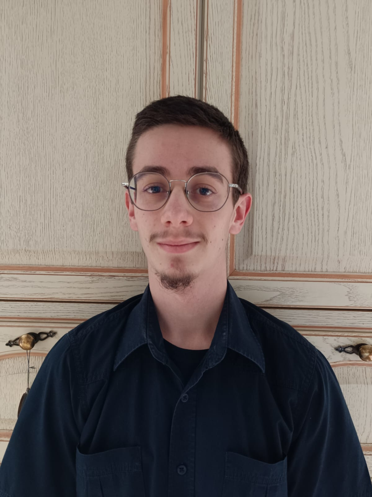
🧑🎓 Préparant mon diplôme d'ingénieur spécialité Système d'Information au CNAM de Paris, je suis apprentis ingénieur logiciel chez Aikku.
🧑🎓 While studying for my engineering degree in Information Systems at CNAM Paris, I work as an apprentice software engineer at Aikku.
=> Je suis à la recherche d'un stage à l'étranger dans le cadre de mon diplome d'ingénieur pour une durée de 2 mois entre juillet et aout 2027 ou 2028
=> As part of my engineering degree, I am looking for a 2-month internship abroad between July and August 2027 or 2028
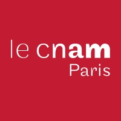
Le diplôme d'ingénieur en préparation va me permettre d'avoir une polyvalence accrue et un esprit critique et d'analyse plus développés dans le développement logiciel.
Cette formation sur 3 ans va m'apporter de multiples expériences, avec l'alternance chez Aikku, une mobilité internationale ainsi qu'un séjour linguistique dans une école en angleterre.
This engineering degree will make me more versatile and strengthen my critical and analytical thinking in software development.
This 3-year program will bring me many experiences: a work-study contract at Aikku, an international mobility and a language stay in a school in England.
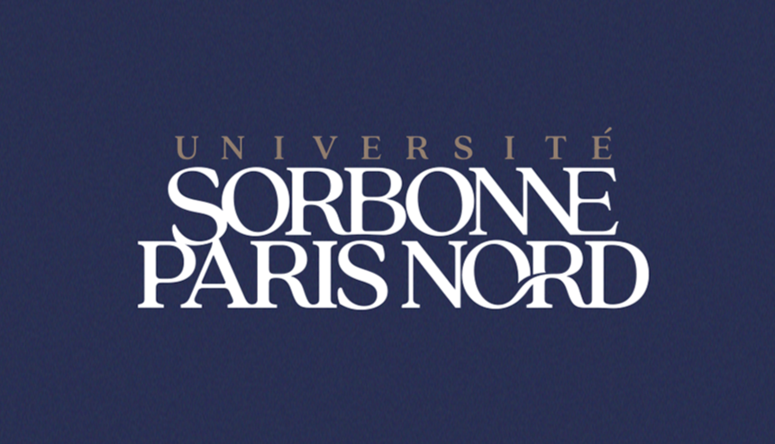
Comme le BUT (Bachelor universitaire et technologique) Informatique est pluridisciplinaire, j'ai touché au développement de logiciels, d'applications mobiles et web, ainsi qu'à la gestion de projet, au droit du numérique, au réseau et à l'architecture logicielle.
Ces compétences ont été appuyés par divers projets en groupe ainsi qu'avec mes stages chez OpenSVC et Aïkku. Ces stages ont été très instructifs, autant coté développement que gestion de projet.
As the BUT (Bachelor of Technology) in Computer Science is multidisciplinary, I worked on software, mobile and web development, as well as project management, digital law, networking and software architecture.
These skills were strengthened by several group projects and by my internships at OpenSVC and Aïkku. These internships taught me a lot, both in development and in project management.
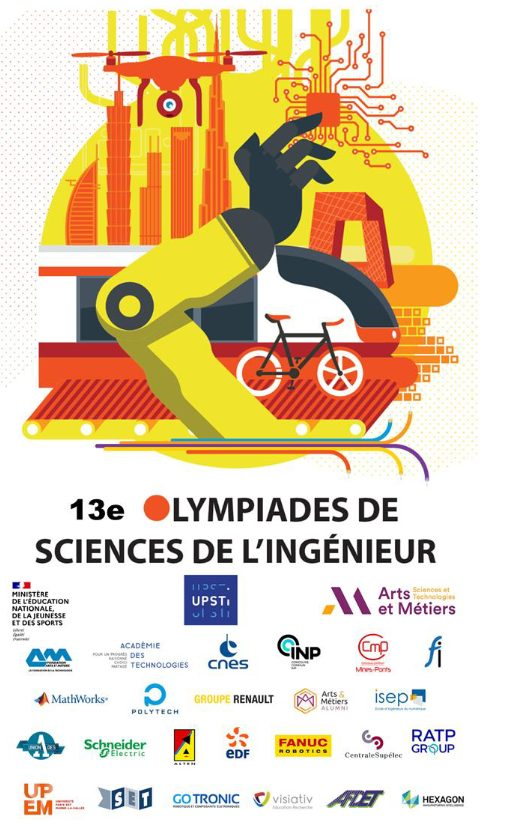
Pendant ma deuxième année en STI2D, j'ai intégré une équipe dans mon lycée sur le développement d'un projet pour le concours de l'Olympiade de Science de l'ingénieur. Celui-ci rassemble des élèves de la filière SI et STI2D venant de toute la France, organisé par Thalès.
Autour du thème de "l’ingénierie au service de la mobilité", nous avons développé et présenté un projet sur le déplacement d'un drone alimenté par des caténaires, chez Thalès, à Vélizy. Cela permettrait de porter du matériel et des outils, afin de faciliter le travail des ouvriers dans les zones difficiles d'accès.
During my second year of STI2D, I joined a team at my high school to develop a project for the Engineering Sciences Olympiad. Organized by Thales, this competition brings together SI and STI2D students from all over France.
On the theme "engineering for mobility", we developed and presented, at Thales in Vélizy, a project of a drone moving along and powered by overhead lines. It could carry equipment and tools to make the workers' job easier in hard-to-reach areas.
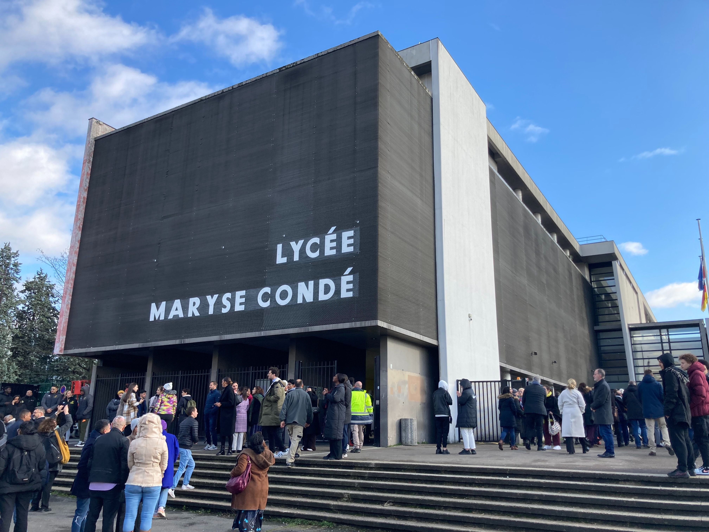
Les années du BAC au lycée Maryse Condé (anciennement La Tourelle) à Sarcelles (95) m'ont fait découvrir le développement et la conception de projets autour de l'informatique. J'ai commencé en concevant des objets robotisés et programmés avec le langage Arduino.
C'est dans une optique de vouloir créer des programmes et des algorithmes et d'avoir la volonté d'apprendre que j'ai choisi le BUT Informatique pour mon cursus post-bac.
My high school years at Maryse Condé (formerly La Tourelle) in Sarcelles (95) introduced me to development and to designing computing projects. I started by building robotic objects programmed with Arduino.
Wanting to create programs and algorithms, and eager to learn, I chose the BUT in Computer Science for my higher education.
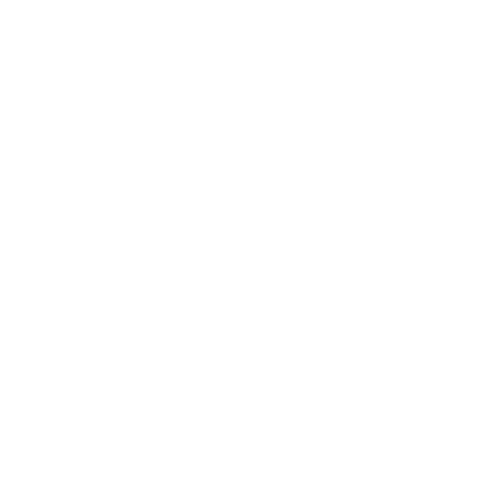
Ruby On Rails
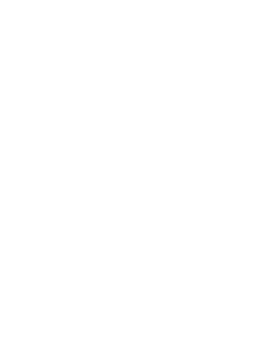
Java
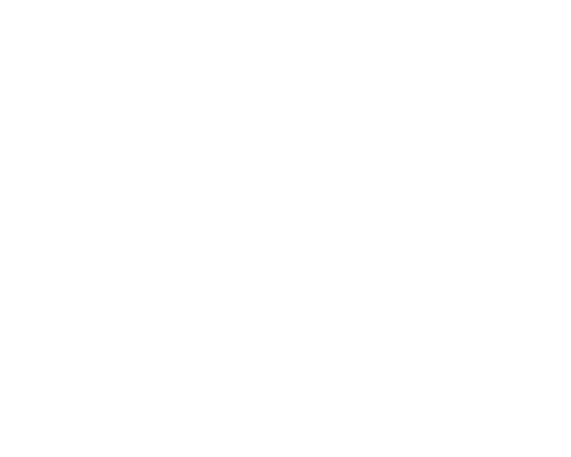
Go
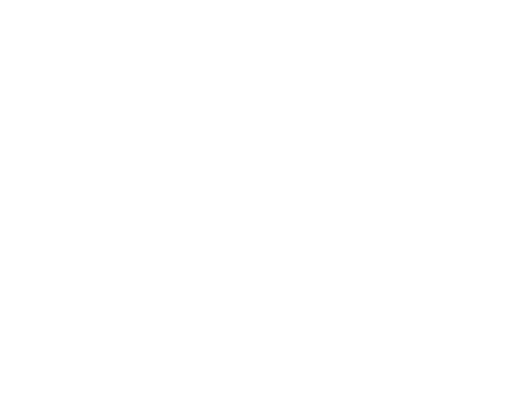
PHP
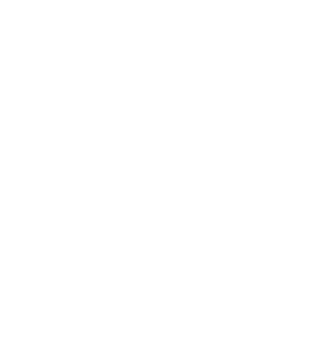
JS
SQL
Tailwind
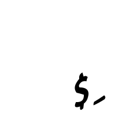
Bash
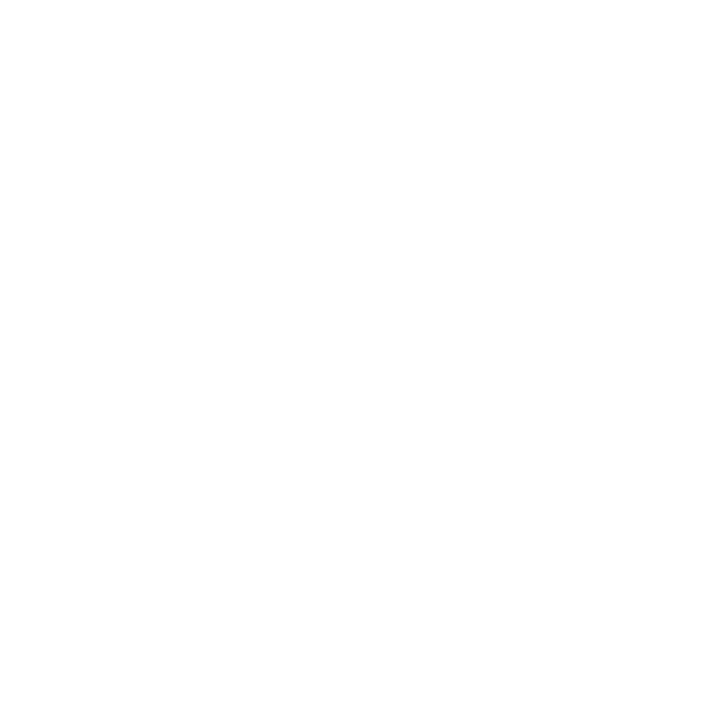
Redis
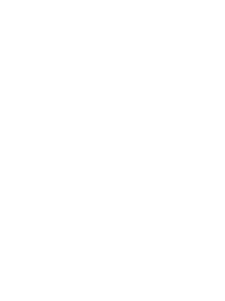
HTML
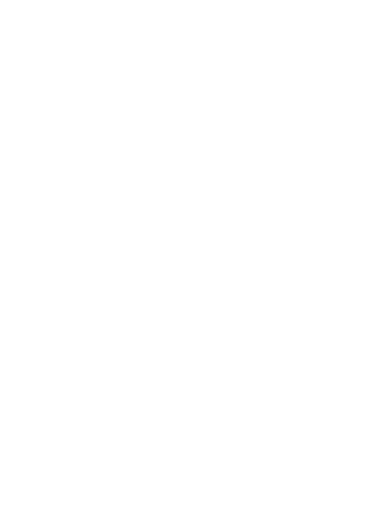
CSS
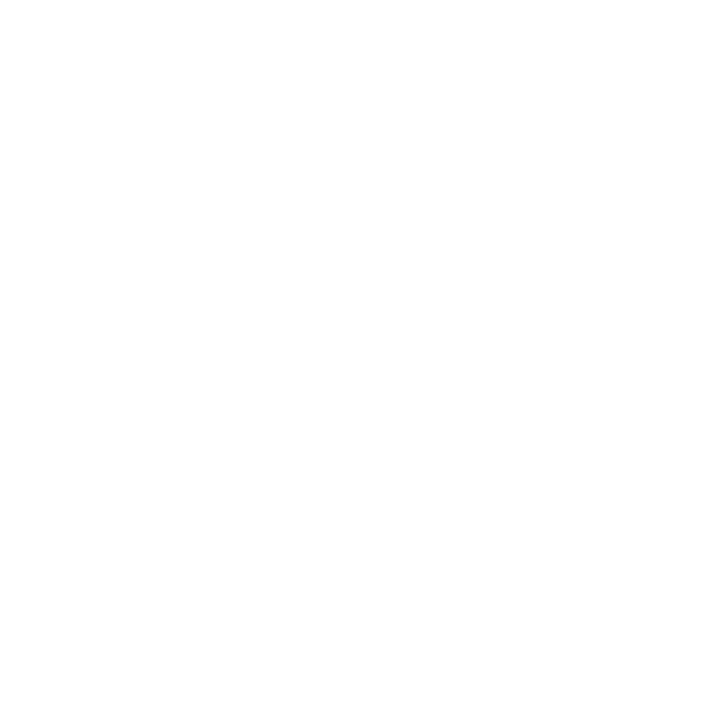
MongoDB
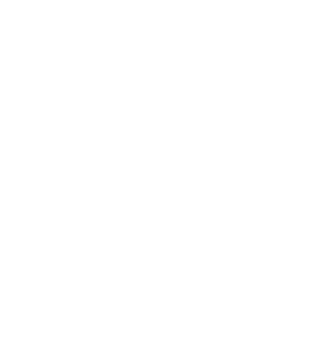
Python
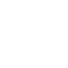
Docker
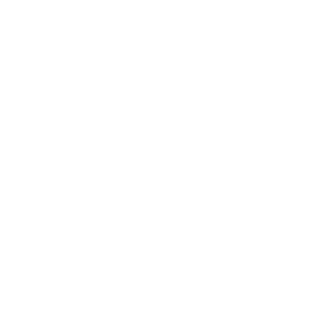
API RESTREST API
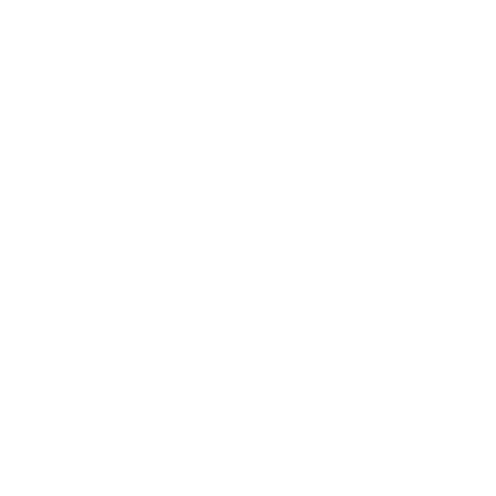
Laravel
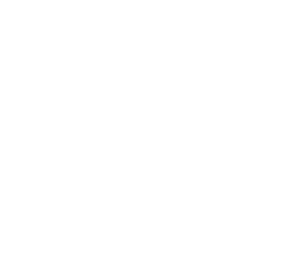
Android
Application web pour les établissements de formation, tel que l'IAE de Paris, permettant la gestion des formations, des cours, des intervenants, etc.
Web application for training institutions, such as the IAE Paris, to manage programs, classes, lecturers, etc.
Suivie et améliorationMaintenance and improvement
CollaborationCollaboration
Intégration APIAPI integration
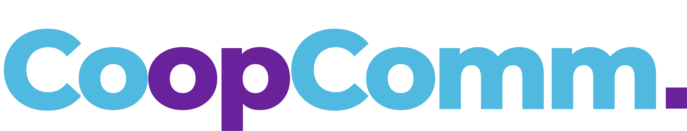
Application web pour les communautés de communes permettant la gestion des interventions (tonte du parc, aménagement du centre-ville, etc) entre les communes.
Web application for groups of municipalities to manage shared interventions (park mowing, town center works, etc.) between towns.
Lancement du projetProject launch
Tests unitairesUnit testing
Intégration APIAPI integration
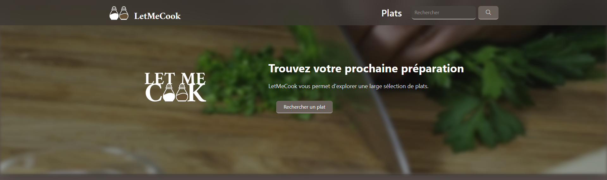
Développement d'une application contenant un sélecteur dynamique de plats de cuisines.
Development of an application with a dynamic dish picker.
AlgorithmeAlgorithms
Gestion de projetProject management
Framework
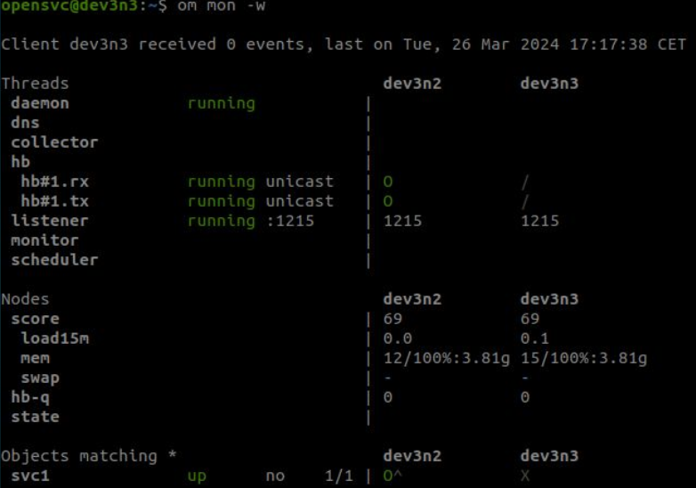
Développement d'un gestionnaire d'API Rest en Golan, pour un daemon Linux assurant la haute disponibilité des services d'un cluster.
Development of a REST API manager in Go for a Linux daemon ensuring high availability of a cluster's services.
GitHub
Structuration de donnéesData structures
Travail en équipeTeamwork
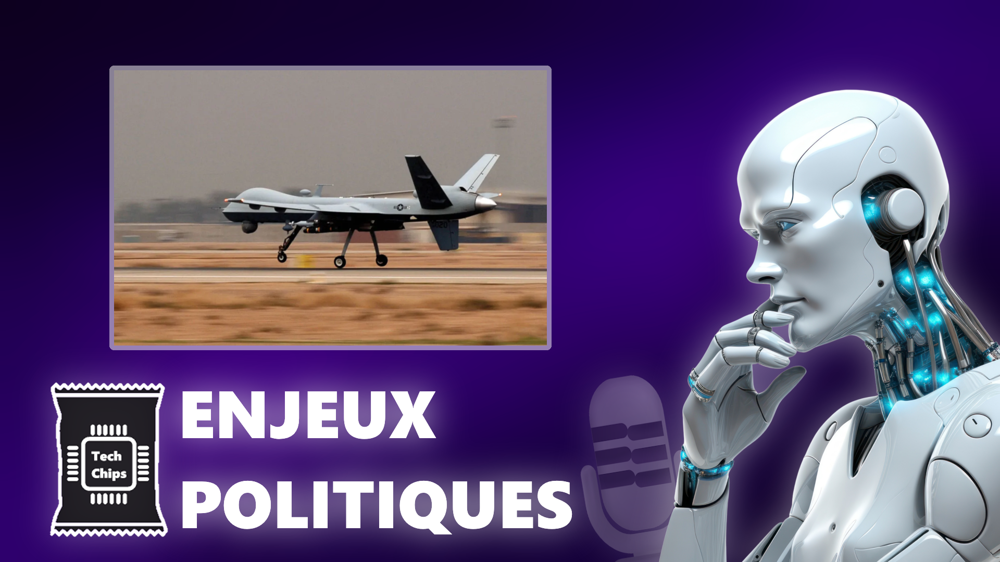
Réalisation et simulation d'un podcast sur les enjeux politiques de l'IA, avec un jeu d'acteurs.
Production of a role-played podcast about the political stakes of AI.
Veille technologiqueTech watch
RédactionWriting
Gantt
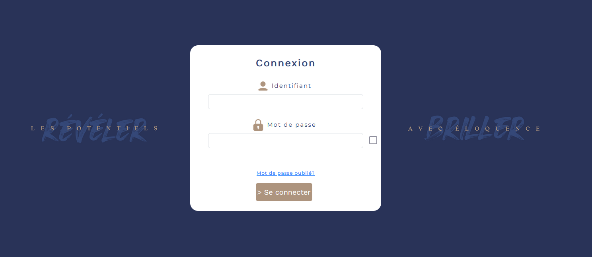
Reprise d'un projet déjà développé par d'autres élèves pour apporter des modifications et l'optimiser.
Taking over a project built by other students to modify and optimize it.
OptimisationOptimization
Gestion de projetProject management
Sécurité des donnéesData security
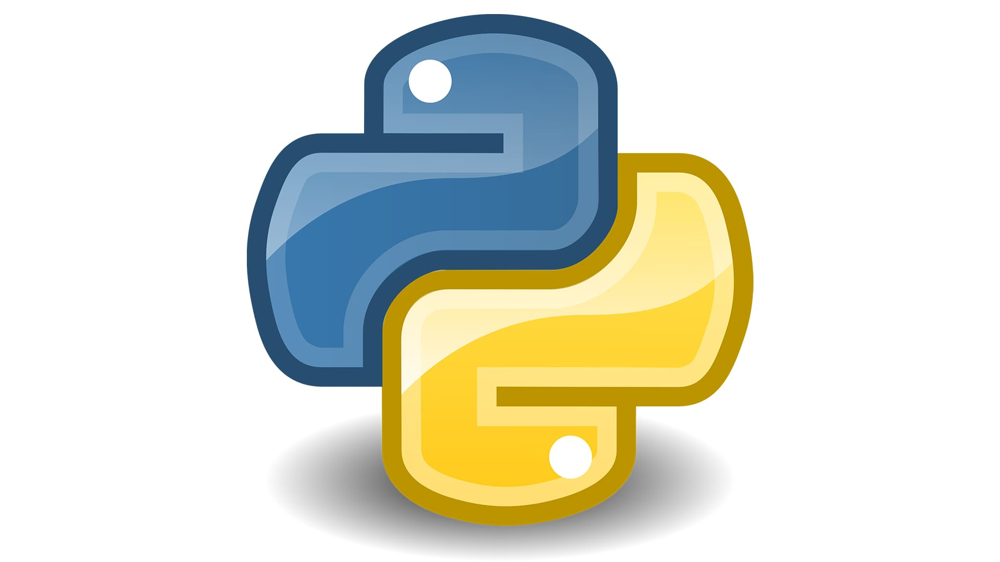
Développement d'un réseau social simple en Python pour apprendre l'algorithmie et la structuration de données.
Development of a simple social network in Python to learn algorithms and data structures.
AlgorithmeAlgorithms
DonnéesData
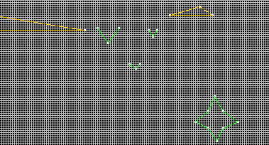
Développement d'une ardoise pouvant contenir des formes géométriques sur un plan 2D, pour apprendre les bases fondamentales de l'orienté objet.
Development of a slate holding geometric shapes on a 2D plane, to learn the fundamentals of object-oriented programming.
HéritageInheritance
Encapsulation
PolymorphismePolymorphism
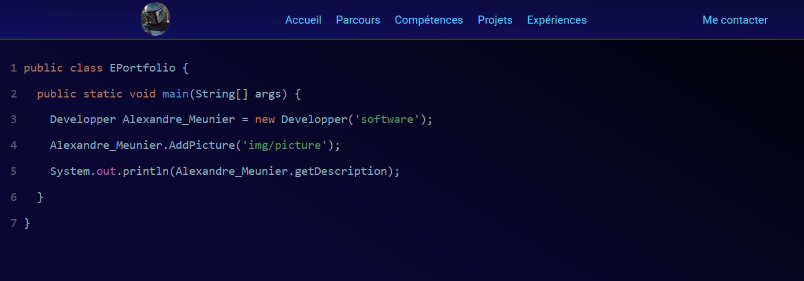
Développement de mon propre site pour me présenter avec une touche de créativité et de liberté.
Development of my own website to introduce myself with a touch of creativity and freedom.
Compréhension de soiSelf-awareness
Communication écriteWritten communication
CréativitéCreativity
2025 (Stage) / 2025 - 2028 (Alternance)2025 (Internship) / 2025 - 2028 (Work-study)
J'ai intégré Aikku durant mon stage de 4 mois en 3ème année de BUT, puis j'ai été accepté pour un contrat de 3 ans en alternance au CNAM.
Mes missions consistent à développer et à apporter de nouvelles fonctionnalités à différents logiciels, notamment Aikku Plann et CoopComm. Je participe activement au développement de nouvelles fonctionnalités en fonction du besoin client, à l'intégration d'API (Edusign, Meteo, GMaps) ou encore à la réalisation des tests unitaires.
Avec un environnement très formateur, j'apprends beaucoup dans l'équipe Aikku, notamment avec mon tuteur Philippe Nougaillon qui me partage beaucoup de sa passion pour l'informatique, ainsi qu'avec des déplacements professionnels pour présenter et améliorer les outils directement avec le client.
I joined Aikku for a 4-month internship during my 3rd year of BUT, then I was accepted for a 3-year work-study contract alongside my studies at CNAM.
My missions are to develop and add new features to several software products, including Aikku Plann and CoopComm. I actively take part in building new features based on client needs, integrating APIs (Edusign, Weather, GMaps) and writing unit tests.
In a very rewarding environment, I learn a lot within the Aikku team, especially from my mentor Philippe Nougaillon who shares his passion for computer science with me, and through business trips to present and improve our tools directly with clients.
Janvier 2024 - Mars 2024January 2024 - March 2024
J'ai découvert le monde de l'entreprise en informatique en intégrant l'équipe OpenSVC dans le cadre d'un stage pendant 10 semaines. Située à Gouvieux dans l'Oise (60), cette entreprise développe un logiciel depuis 13 ans pour assurer la haute disponibilité des services d'une entreprise.
Ainsi, j'ai intégré un projet open source sur GitHub pour développer un gestionnaire d'API en Go pour influencer un daemon sous Linux. J'ai appris le système de parallélisme du Go, le fonctionnement d'une API RESTful et d'un daemon Linux.
Un rapport présente et résume la globalité de mes missions : Rapport de stage OpenSVC
I discovered the IT business world by joining the OpenSVC team for a 10-week internship. Based in Gouvieux, Oise (60), this company has been developing software for 13 years to ensure high availability of business services.
I joined an open source project on GitHub to develop an API manager in Go that controls a Linux daemon. I learned Go's concurrency model and how a RESTful API and a Linux daemon work.
A report presents and summarizes all my missions (in French): OpenSVC internship report
Octobre 2023 - Septembre 2024October 2023 - September 2024
À côté de mes études, j'exerçais le métier de caissier au Carrefour de Luzarches (95). J'ai amélioré ma polyvalence, à gérer les clients à ma caisse et à traiter rapidement les problèmes.
Alongside my studies, I worked as a cashier at the Carrefour supermarket in Luzarches (95). I became more versatile, handling customers at my checkout and solving problems quickly.
Août 2023 - Septembre 2023August 2023 - September 2023
J'ai travaillé en tant qu'équipier au McDonald's, de l'Isle-Adam (95). Ce poste polyvalent demandait de préparer des commandes, de nettoyer et d'encaisser. J'ai amélioré ma prise d'initiative ainsi que ma cohésion dans une équipe.
I worked as a crew member at the McDonald's in L'Isle-Adam (95). This versatile position involved preparing orders, cleaning and handling payments. I improved my initiative and my teamwork.
Juin 2022 - Juillet 2022June 2022 - July 2022
J'ai réalisé mon premier job étudiant en tant que secrétaire dans le Garage Pacemaker, situé à Champagne sur Oise (95). Ce poste demandait d'accueillir et gérer la clientèle, la prise de rendez-vous, ainsi que la gestion des stocks, des devis et des factures.
My first student job was as a secretary at Garage Pacemaker, in Champagne-sur-Oise (95). The job involved welcoming and managing customers, booking appointments, and handling stock, quotes and invoices.
Me contacter :Contact me:
Tous droits réservésAll rights reserved